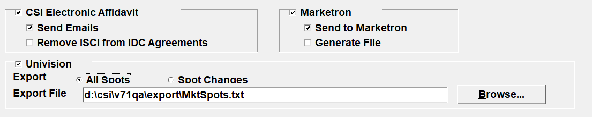
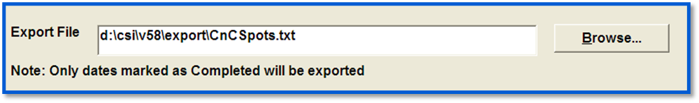
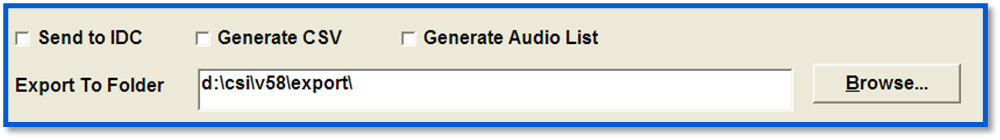
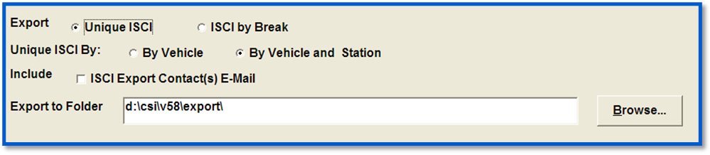
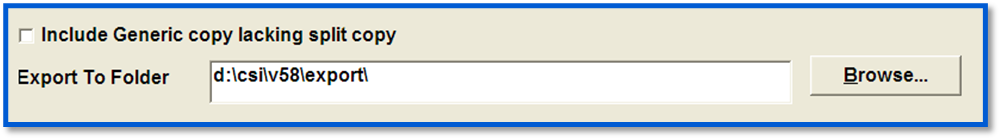
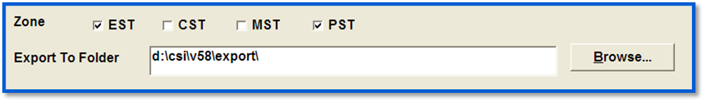
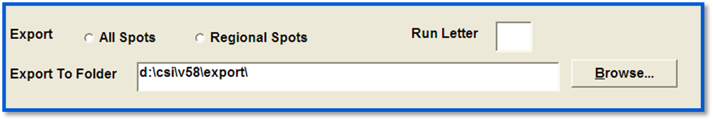
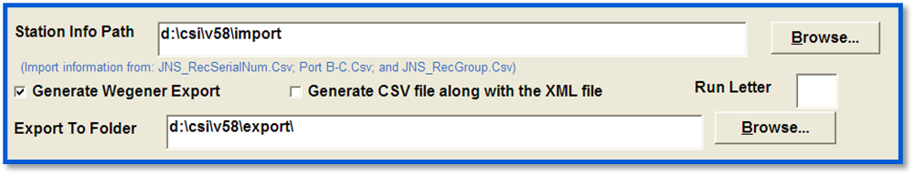
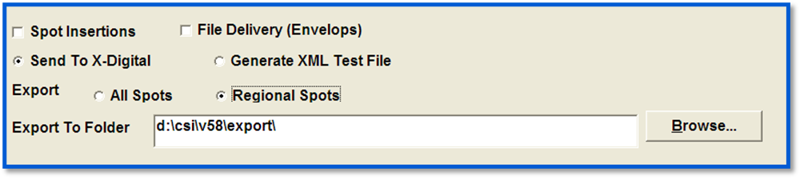

Export Specifications
You can control what the Export Center sends, and where the confirmation reports are stored in the top portion of the Specification Parameters screen.
The bottom portion of the screen is where you select which vehicles will be included in the export. All of the vehicles on the left side of the screen will not be exported; all vehicles on the right side will be included in the export. Any vehicles whose export parameters are set up in the Traffic system will automatically appear in the Vehicles to be exported box.
To include a vehicle in the export, simply click on the vehicle from the left side box and it will move to the right side. If you make a mistake, click on the vehicle in the right side and it will return to the left side. When all vehicles are selected, click “Done”.
The newly defined export will now appear on the Main Export Center screen.
Each export has unique questions to be answered in the Specification parameters screen.
Affiliate Logs (Aff Logs)

This screen covers all log exports. Select the log format you wish to export: the Counterpoint Affidavit system, the Marketron Network Connect system, or Univision, and select the parameters that you wish to use for each export.
Clearance and Compensation

Select the folder you want to save your files to (generally CSI\ProdExport), and select the vehicles you wish to include in the export.
IDC

- Send to IDC: will send your audio information directly to IDC based on the XML.INI definitions. You can verify the export by reading the results in the CSI\Prod\Data\Messages folder.
- Generate CSV: will create a CSV file that can be easily viewed to see what was sent to IDC. The file is stored in the CSI\Prod\Export folder.
- Generate Audio List: will create a txt file that lists any MP3 files that need to be added to the IDC directory location. For any advertisers listed, move those MP3 files to the IDC server. If there are no advertisers listed, you can continue with the Send to IDC.
Select the folder to which you want to save your files (generally CSI\Prod\Export).
ISCI

- Unique ISCI: Produces a list of all the generic and split regional ISCI codes unique to each affiliate. If using Unique ISCI, two additional options appear:
- By Vehicle: Lists all the generic and regional ISCI codes unique to a vehicle for a span of dates.
- By Vehicle and Station: Lists all the generic and regional ISCI codes unique to each affiliate of a vehicle for a span of dates.
- ISCI by Break: Produces a list of each spot to air for each station in log order with the generic or split copy, in break and position number order. If using ISCI by Break an additional option appears:
- Program Segments: If program segments should be included with the export, one will be placed before the first break, and one after each other break in the vehicle. If the last break contains nothing but Promos, no program segment will be generated after it.
- ISCI Export Contacts Email: The ISCI Export contact in Stations screen -> Personnel tab will receive the ISCI export if checked.
Select the folder to which you want to save your Files (generally CSI\Prod\Export).
ISCI Cross Reference (C/R)

The export is designed for split copy, but if you wish to include advertisers without copy splits, only generic copy, click “Include Generic copy lacking split copy” and all advertisers will be included. Select the folder to which you want to save your Files (generally CSI\Prod\Export).
RCS 4 or RCS 5

Select the Time Zones to be included in the export. Select the folder you want to save your Select the folder to which you want to save your Files (generally CSI\Prod\Export).
StarGuide

Choose whether to send all spots or only those with regional copy.
Select the folder to which you want to save your Files (generally CSI\Prod\Export).
Run Letter: This is the last character in the file name, and allows multiple runs to be distinguished from one another.
Wegener

- Station Info Path: The file path where the Wegener Compel import files must be defined. These files are used to flag stations that are using Wegener and to map stations to the correct receiver port.
- Generate Wegener Export:Generates the file to be sent to Wegener.
- Generate CS file along with the XML file: The purpose of the XML file is for troubleshooting to see what information was sent to the Wegener system. This file is in the export folder.
- Run Letter: This is the last character in the Wegener file name. This allows multiple runs to be distinguished from one another.
Select the folder to which you want to save your Files (generally CSI\Prod\Export).
X-Digital

- Spot Insertions: For each day on each station, Counterpoint sends X-Digital information that contains the program codes (vehicle name), hour number, break number, and position that contains a Regional spot, along with the ISCI code for that Regional spot.
- File Delivery (Envelopes): The File Delivery Envelope is created in the folder on the X-Digital export screen. It creates the XML file that contains the unique ISCI codes.
- Send to X-Digital: This sends the spot information to the XDS head end unit based on the information in the XML.INI.
- Generate XML test file: This creates a test file that can be reviewed prior to export.
- All Spots: X-Digital will send out all audio to be aired (Generic and Regional).
- Regional Spots: X-Digital will replace generic audio information with copy split information.
Select the folder to which you want to save your Files (generally CSI\Prod\Export).